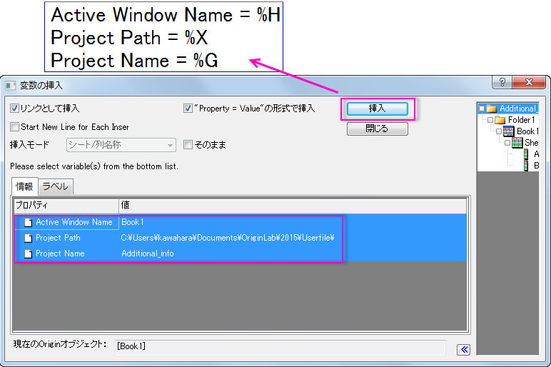
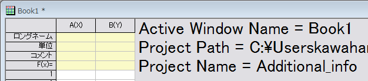

FAQ-728 プロジェクトファイルのパスやファイル名、アクティブウィンドウ名等の情報変数をグラフやワークシートに挿入するには？
Project-Additional-Information
最終更新日:2015/08/03
追加情報も可能です。変数の挿入ダイアログの右パネルでルートフォルダを選択すると、アクティブウィンドウネーム、プロジェクトパス、プロジェクトネームが情報タブに表示されます。
テキストオブジェクトに情報変数を追加するには
- ワークブックもしくはグラフウィンドウをアクティブにし、テキストツール
 を使用してテキストオブジェクトを追加します。
を使用してテキストオブジェクトを追加します。
- 編集できるようにテキストオブジェクトをダブルクリックし、右クリックで情報変数の挿入を選択して変数の挿入ダイアログを開きます。右パネルでルートフォルダを、左パネルで変数を選択し、挿入をクリックしてテキストオブジェクトに情報を挿入します。

- 別の場所をクリックして内部編集モードを中止すると、追加された内容は以下のように表示されます。

- 情報変数が変化したときは、ウィンドウをアクティブにし、F5を押してテキストオブジェクト内の情報を更新します。
 |
複数の情報変数を複数行に分けて挿入するには、挿入で新しい線を開始チェックボックスに印がついていることを、あらかじめ確認してください。
|
ワークシートのセルに情報変数を追加するには
列をアクティブにし、メニューから列：セル値の設定を選択し、値の設定ダイアログを開いたら、変数：変数情報の追加で変数の挿入ダイアログを開きます。あとは、上記のStep 2,3のようにすればセルに情報変数を挿入できます。
キーワード：テキストツール, 列値の設定, 情報変数